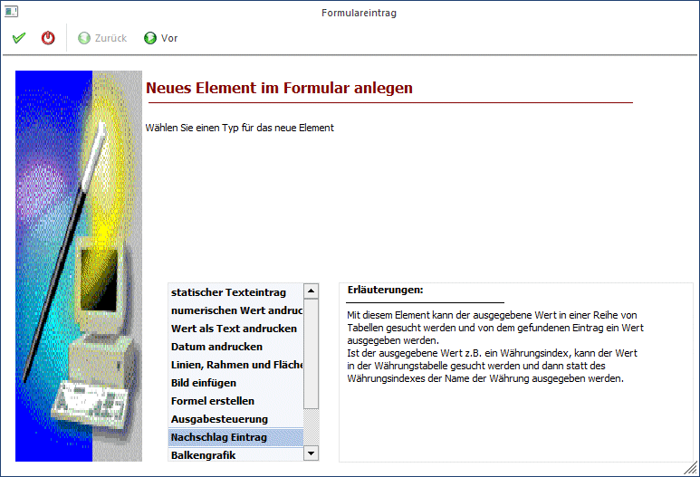
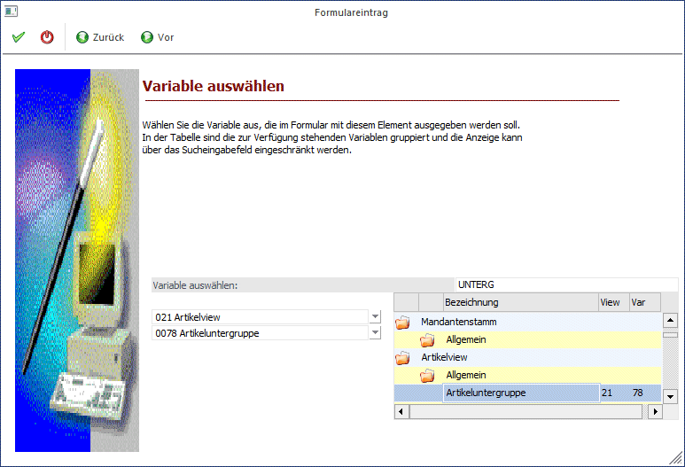
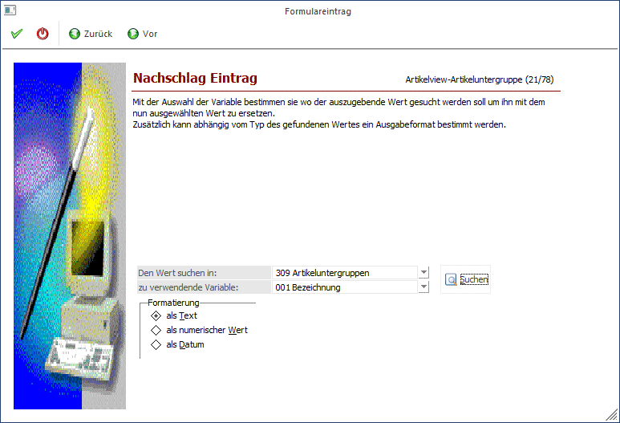
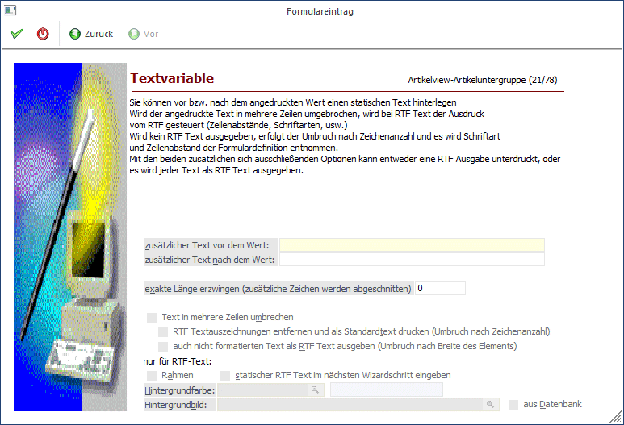
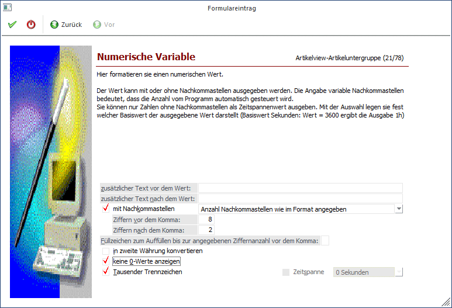
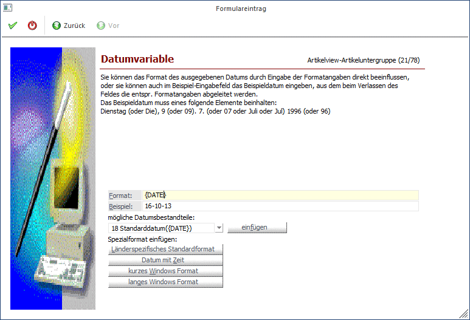

Ein Nachschlag-Eintrag dient dazu, eine Referenz von einer Variable zu einer anderen Variable, die im direkten Zusammenhang stehen, aufzubauen.
Beispiele
In der Statistik wird immer nur die Vertreternummer gespeichert. Da die Vertreternummer aber nicht aussagekräftig ist, soll der Vertretername angedruckt werden. Dazu wird die Vertreternummer aus der Statistik mit dem Vertreternamen aus den Vertreterstammdaten verbunden.
Schritt 1
Bei der Auswahl des neuen Elements wird die Option "Nachschlag Eintrag" ausgewählt.

Durch Anklicken des VOR-Buttons gelangt man in das nächste Fenster, wo die Variable definiert werden kann, die angedruckt werden soll.
Schritt 2

Aus der ersten Auswahllistbox kann der Datenbereich ausgewählt werden, wobei für jeden Ausdruck immer nur bestimmte Datenbereiche vorgesehen sind (in einem Kontoblatt kann z.B. nicht auf Artikelstammdaten zugegriffen werden).
Aus der zweiten Listbox muss dann die Variable selbst ausgesucht werden, die angedruckt werden soll. Im rechten Bereich des Fensters kann auch nach bestimmten Variablen gesucht werden. Wenn im Feld Suchbegriff ein Wert eingetragen und durch Drücken der TAB-Taste bestätigt wird, werden alle verfügbaren Variablen angezeigt, die den Suchbegriff irgendwo enthalten. Durch einen Doppelklick aus dem Suchergebnis kann die Variable übernommen werden.
Durch Anklicken des VOR-Buttons kann definiert werden, durch welche Variable der gewählte Eintrag ersetzt werden soll. Durch Anklicken des ZURÜCK-Buttons kann nochmals der Typ verändert werden. Durch Drücken der F5-Taste wird der Eintrag in das Formular übernommen. Durch Drücken der ESC-Taste wird das Fenster geschlossen.
Schritt 3

Im 3. Schritt wird definiert, mit welchem Wert (mit welcher Variable) der zuvor hinterlegt Wert ersetzt werden soll.
Ø Den Wert suchen in
Hier wird der Datenbereich ausgewählt, aus dem eine alternative Variable angedruckt werden soll.
Ø Zu verwendende Variable
Aus der Tabelle wird die Variable gewählt, die anstelle der zuerst angeführten Variable angedruckt werden soll (z.B. Vertretername).
Durch Anklicken des Suchen-Buttons kann nach bestehenden Variablen gesucht werden.
Ø Formatierung
Hier kann gewählt werden, in welchem Format das Ergebnis gedruckt werden soll, wobei die Optionen
ü als Text
Das Ergebnis wird
nicht formatiert ausgegeben
ü als Numerischer Wert
Das
Ergebnis wird als Zahl formatiert ausgegeben
ü als Datum
Das Ergebnis wird als
Datum formatiert ausgegeben
zur Verfügung stehen.
Durch Anklicken des VOR-Buttons können weitere Einstellungen vorgenommen werden, wobei die Art der Einstellungen davon abhängt, welche Art der Formatierung gewählt wurde.
Formatierung als Text

Ø zusätzlicher Text vor dem Wert
Wird in diesem Feld etwas eingetragen, dann wird der Variable ein Text vorangestellt, d.h. vor dem Wert wird noch eine dazugehörige Bezeichnung angedruckt (Führungstext).
Ø zusätzlicher Text nach dem Wert
Wird in diesem Feld etwas eingetragen, dann wird nach der Variable ein Text angedruckt.
Ø Exakte Länge erzwingen (zusätzliche Zeichen werden abgeschnitten)
Hier kann (eine Zahl) angegeben werden, wie viele Zeichen tatsächlich ausgedruckt werden sollen. Befinden sich im Datenfeld trotzdem mehr Zeichen werden diese weggelassen. Diese Option wird dann verwendet werden, wenn für den Andruck nur eine bestimmte Anzahl von Stellen vorgesehen ist.
Ø Text in mehrere Zeilen umbrechen
Ermöglicht die Ausgabe über mehrere Zeilen (mit Zeilenumbruch). Wenn RTF-Felder (Rich-Text-Format-Felder: Notizblöcke im Personenkonten- oder Artikelstamm) verwendet werden, muss diese Option gesetzt werden, damit der Text nicht mit Sonderzeichen ausgegeben wird.
Ist die Option "Text in mehrere Zeilen umbrechen" aktiviert, stehen zwei weitere Optionen zur Verfügung:
Ø RTF Textauszeichnungen entfernen und als Standardtext drucken (Umbruch nach Zeichenanzahl)
Mit dieser Option wird gesteuert, dass RTF-Texte als "normaler" Text ausgedruckt wird - damit gehen allerdings alle Formatierungsinformationen (Schriftarten, und -größen, Hervorhebungen) verloren.
Ø Auch nicht formatierten Text als RTF Text ausgeben (Umbruch nach Breite des Elements)
Ist diese Option aktiviert, dann wird der angedruckte Text immer in einen RTF-Text konvertiert. Diese Funktion kommt dann zum Tragen, wenn nicht alle Notiztexte mit einer aktuellen Version erfasst wurden.
Nur für RTF-Text
Ø Rahmen
Durch Aktivieren dieser Checkbox, wird der Multilinetext mit einem Rahmen eingefasst.
Ø Statischer RTF Text im nächsten Wizardschritt eingeben
Wird diese Checkbox aktiviert, dann kann im nächsten Schritt des Wizard ein freier Text eingegeben werden, der nicht unbedingt in einer Variable enthalten sein muss.
Ø Hintergrundfarbe
Hinterlegung einer Hintergrundfarbe für Mulitlinefelder. Über den Matchcode können die Farben ausgewählt werden.
Ø Hintergrundbild
Für Multilinefelder kann hier ein Hintergrundbild festgelegt werden. Über den Matchcode kann nach Bildern gesucht werden.
Ist die Checkbox
Ø aus Datenbank
aktiviert, werden im Matchcode nur mehr Grafiken vorgeschlagen, die sich in er Datenbank befinden.
Formatierung als numerischer Wert

Ø zusätzlicher Text vor dem Wert
Wird in diesem Feld etwas eingetragen, dann wird der Variable ein Text vorangestellt, d.h. vor dem Wert wird noch eine dazugehörige Bezeichnung angedruckt (Führungstext).
Ø zusätzlicher Text nach dem Wert
Wird in diesem Feld etwas eingetragen, dann wird nach der Variable ein Text angedruckt.
Ø Mit Nachkommastellen
Wird diese Option aktiviert, dann erfolgt die Ausgabe des Wertes mit Nachkommastellen, wobei die Anzahl der Nachkommastellen frei definiert werden kann:
ü Anzahl Nachkommastellen wie im
Format angegeben
Mit dieser Einstellung wird die Zahl so angedruckt, wie sie
in den nachfolgenden Feldern ("Ziffern vor dem Komma" und "Ziffer nach dem
Komma" hinterlegt werden. Das ist die Standardeinstellung und kann bei einem
Grußteil der numerischen Werte verwendet werden.
ü Anzahl Nachkommastellen lt. Menge
1 (Artikelgruppe)
Mit dieser Einstellung wird die Anzahl der Nachkommastellen
verwendet, die bei der Menge1 in den Artikelgruppen hinterlegt ist. Diese Option
wird nur dann verwendet werden, wenn Mengen (Belegformulare) angedruckt
werden.
ü Anzahl Nachkommastellen lt. Menge
2 (Artikelgruppe)
Mit dieser Einstellung wird die Anzahl der Nachkommastellen
verwendet, die bei der Menge2 in den Artikelgruppen hinterlegt ist. Diese Option
wird nur dann verwendet werden, wenn Mengen (Belegformulare) angedruckt
werden.
ü Anzahl Nachkommastellen lt.
Einzelpreis (Artikelgruppe)
Mit dieser Einstellung wird die Anzahl der
Nachkommastellen verwendet, die beim Preis in den Artikelgruppen hinterlegt ist.
Diese Option wird nur dann verwendet, wenn unterschiedliche Einstellungen bei
den Preisen verwendet werden, die auch beim Ausdruck berücksichtigt werden
sollen.
ü Anzahl Nachkommastellen lt.
Mandantenstamm
Mit dieser Einstellung wird die Anzahl der Nachkommastellen
aus dem Mandantenstamm verwendet.
Ø Ziffern vor dem Komma
In diesem Feld kann die Anzahl der Ziffern angegeben werden, die vor dem Komma gedruckt werden sollen. Standardmäßig werden 8 Stellen vor dem Komma vorgeschlagen.
Ø Ziffern nach dem Komma
Dieses Feld ist nur dann aktiv, wenn die Option "mit Nachkommastellen" aktiviert ist, wobei hier die Anzahl der Nachkommastellen (max. 6) hinterlegt werden können. Standardmäßig werden 2 Nachkommastellen vorgeschlagen
Ø Füllzeichen zum Auffüllen bis zur angegebenen Ziffernanzahl vor dem Komma
Abhängig von der Anzahl der anzudruckenden Zeichen (einzustellen im Feld "Ziffern vor dem Komma") und des angedruckten Wertes wird das Feld mit dem hinterlegten Zeichen aufgefüllt (z.B. * auf einem Zahlschein).
Ø in zweite Währung konvertieren
Ist diese Checkbox aktiviert, wird der Wert in die zweite Währung, die im Mandantenstamm hinterlegt ist, umgerechnet. Damit können alle Werte in beiden verwendeten Währungen angedruckt werden.
Ø keine 0-Werte anzeigen
Bei aktivierter Option wird der Andruck von Null-Werten verhindert. D.h. ist der Wert 0, wird nichts angedruckt - auch nicht 0.
Ø Tausender Trennzeichen
Ist diese Option aktiviert, dann werden die Tausender Trennzeichen gemäß den Ländereinstellungen angedruckt.
Ø Zeitspanne
Diese Option rechnet einen Wert in eine Zeitangabe um. Diese Option kann nur bei speziellen Datenfeldern (z.B. in der Produktion) verwendet werden.
Formatierung als Datum

Ø Format
Im diesem Feld wird das Format angezeigt, in dem das Datum ausgedruckt wird. Das Format kann durch die weiteren Optionen bestimmt werden.
Ø Beispiel
In diesem Feld wird anhand des Datums 9. Juli 1996 dargestellt, wie das Datum - anhand der Einstellungen im Feld Format - ausgegeben wird.
Ø mögliche Datumsbestandteile
Aus der Auswahllistbox können Bestandteile des Datums ausgewählt werden, die durch Anklicken des Einfügen-Buttons in das Feld Format übernommen werden. Dabei ist darauf zu achten, an welcher Stelle der Cursor im Feld "Format" steht - denn dort wird die ausgewählte Option eingefügt. So kann ein individuelles Datumsformat zusammengestellt werden.
Folgende Optionen stehen dabei zur Verfügung:
ü Tag, numerisch mit 0
Der Tag
wird numerisch angedruckt, wobei bei einstelligen Tagen eine führende 0
vorangestellt wird (z.B. 03 oder 11).
ü Tag, numerisch
Der Tag wird
numerisch angedruckt, (z.B. 3 oder 11).
ü Tag in Worten
Der Tag wird in
ganzen Worten angedruckt (z.B. Montag)
ü Tag (kurz) in Worten
Der Tag
wird in Worten, allerdings in abgekürzter Form ausgegeben (z.B. Mon für
Montag).
ü Monat, numerisch mit 0
Das
Monat wird mit Ziffern ausgegeben, wobei bei einstelligen Monatszahlen eine
Vorlauf-0 gedruckt wird (z.B. 03, 11)
ü Monat, numerisch
Das Monat wird
mit Ziffern ausgegeben (z.B. 3, 11)
ü Monat in Worten
Das Monat wird
in Worten angedruckt (z.B. März, November)
ü Monat (kurz) in Worten
Das
Monat wird in Worten, allerdings in abgekürzter Form ausgegeben (z.B. Mär,
Nov)
ü Jahr, zweistellig
Die
Jahreszahl wird mit 2 Stellen angezeigt.
ü Jahr, zweistellig mit 0
Die
Jahreszahl wird mit 2 Stellen angezeigt, ist das Jahr allerdings einstellig,
wird eine führende Null dargestellt (für 2001 wird 01 angedruckt).
ü Jahr, vierstellig
Die
Jahreszahl wird vierstellig ausgegeben.
ü Minuten mit 0
Die Minuten
werden angezeigt, wobei einstellige Werte mit einer 0 aufgefüllt werden.
ü Minuten
Die Minuten werden
angezeigt.
ü Sekunden mit 0
Die Sekunden
werden angezeigt, wobei einstellige Werte mit einer 0 aufgefüllt werden.
ü Sekunden
Die Sekunden werden
angezeigt.
ü Stunden mit 0
Die Stunden
werden angezeigt, wobei einstellige Werte mit einer 0 aufgefüllt werden.
ü Stunden
Die Stunden werden
angezeigt.
ü Standarddatum
Damit wird das
Datum gemäß den Standardeinstellungen aus der Windows-Ländereinstellung
angedruckt.
ü kurzes Windowsformat
Damit wird
das kurze Datumsformat gemäß den Standardeinstellungen aus der
Windows-Ländereinstellung angedruckt.
ü langes Windowsformat
Damit wird
das lange Datumsformat gemäß den Standardeinstellungen aus der
Windows-Ländereinstellung angedruckt.
Ø Spezialformat einfügen
Hier stehen 4 zusätzliche Optionen zur Verfügung, die durch Anklicken des jeweiligen Buttons in das Feld Format übernommen werden. Dabei wird allerdings der bestehende Inhalt des Feldes Format gelöscht.
ü Länderspezifisches
Standardformat
Damit wird das Standard-Format aus der Windows-Systemsteuerung
übernommen.
ü Datum mit Zeit
Es wird das
Standard-Format mit Zeit aus der Windows-Systemsteuerung übernommen.
ü kurzes Windows Format
Damit
wird das kurze Datumsformat gemäß den Standardeinstellungen aus der
Windows-Ländereinstellung angedruckt.
ü langes Windows Format
Damit
wird das lange Datumsformat gemäß den Standardeinstellungen aus der
Windows-Ländereinstellung angedruckt.
Durch Drücken der F5-Taste wird der Eintrag in das Formular übernommen. Durch Drücken der ESC-Taste wird das Fenster geschlossen.